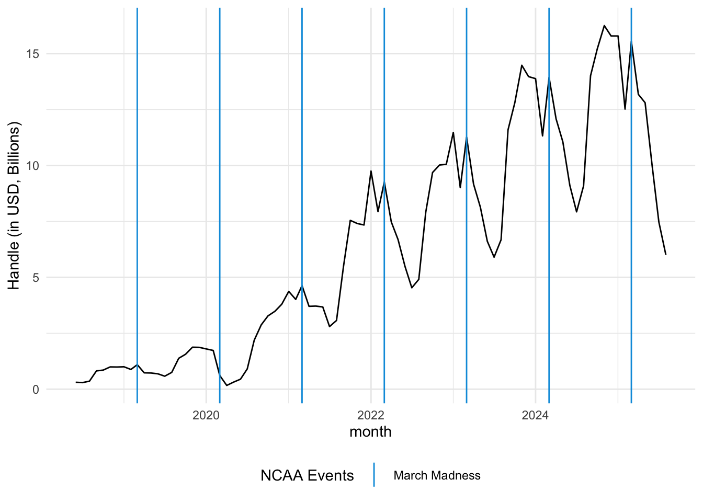
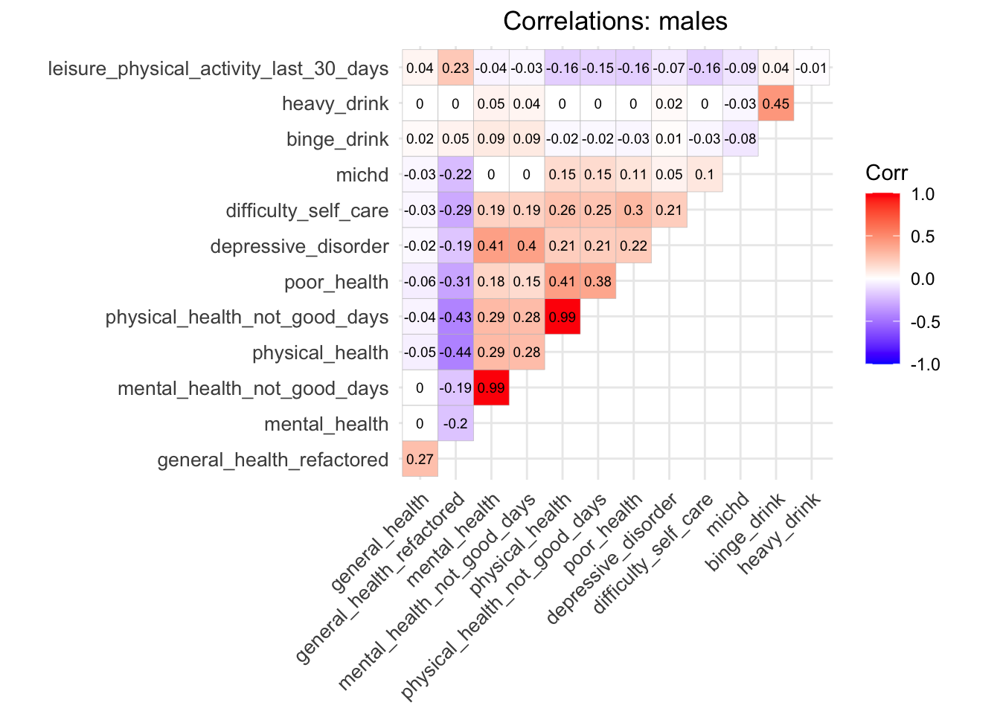
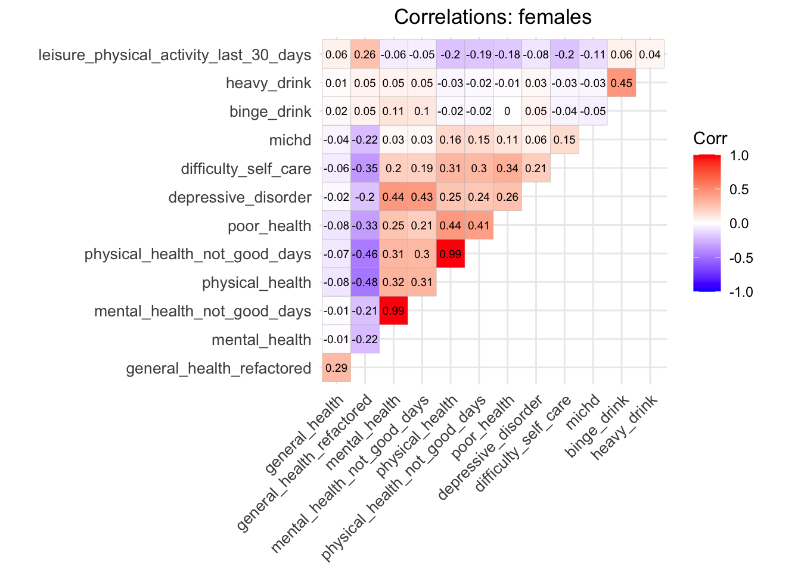
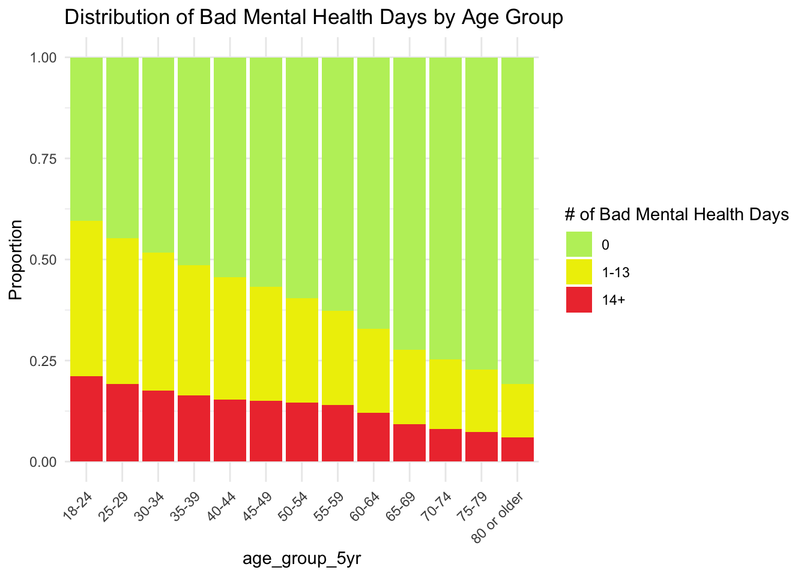
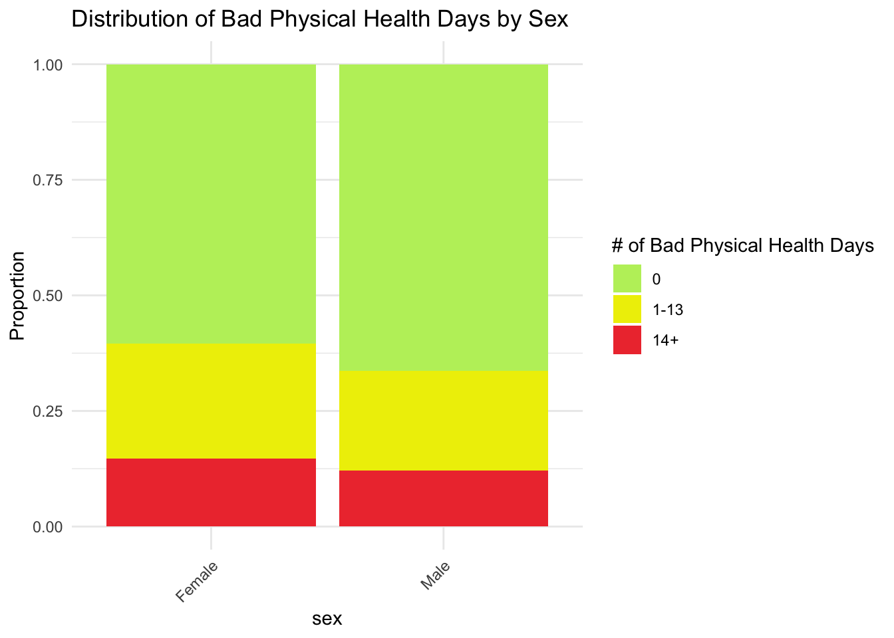
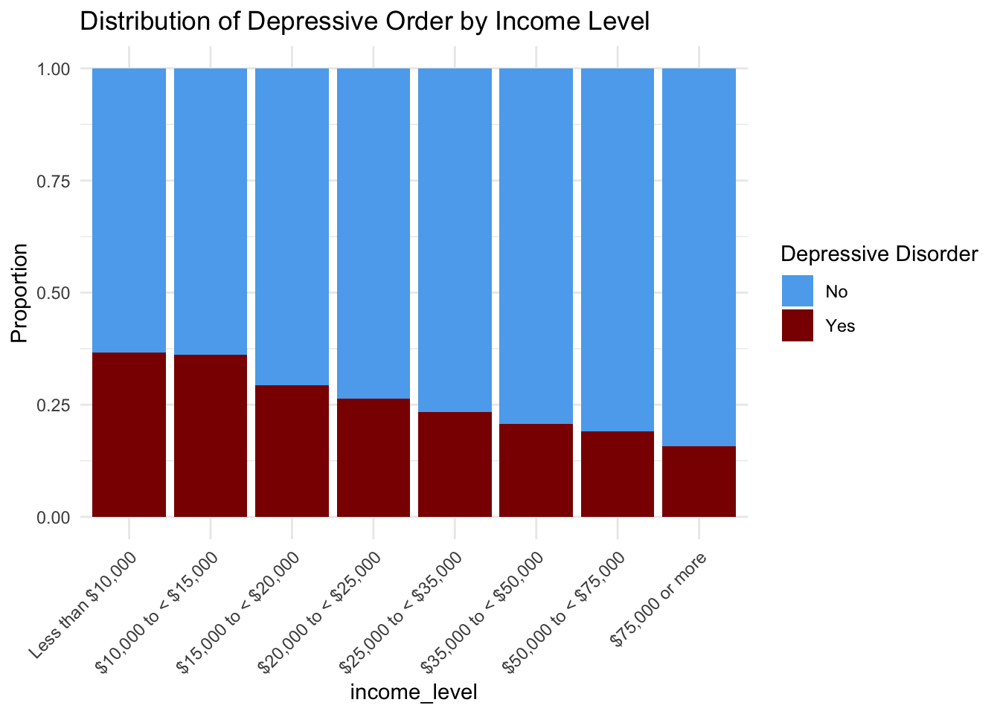
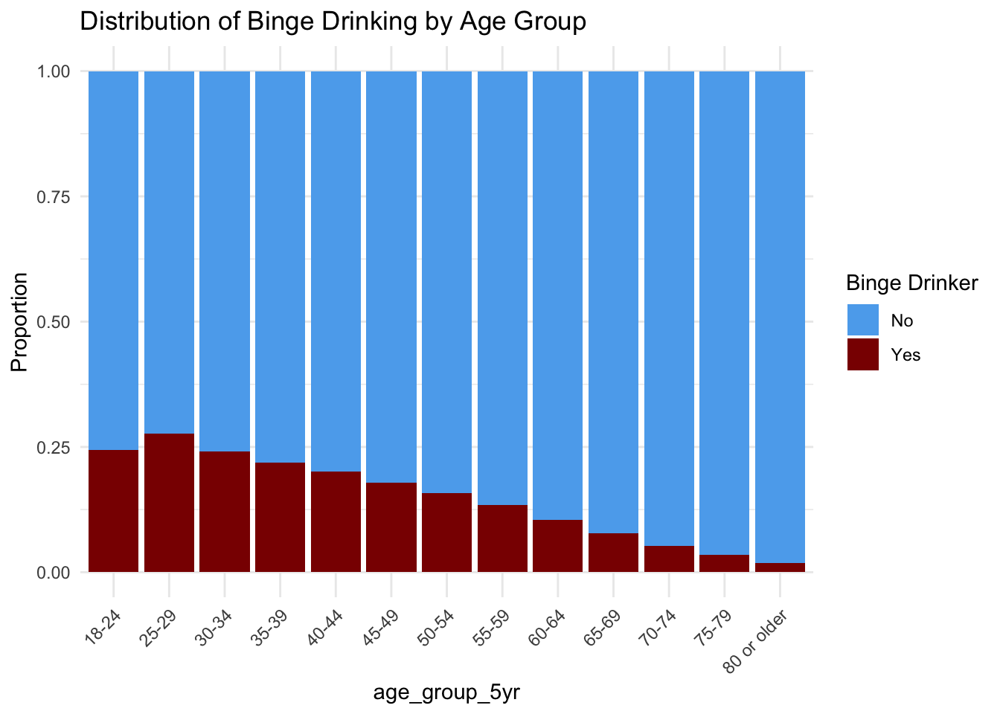
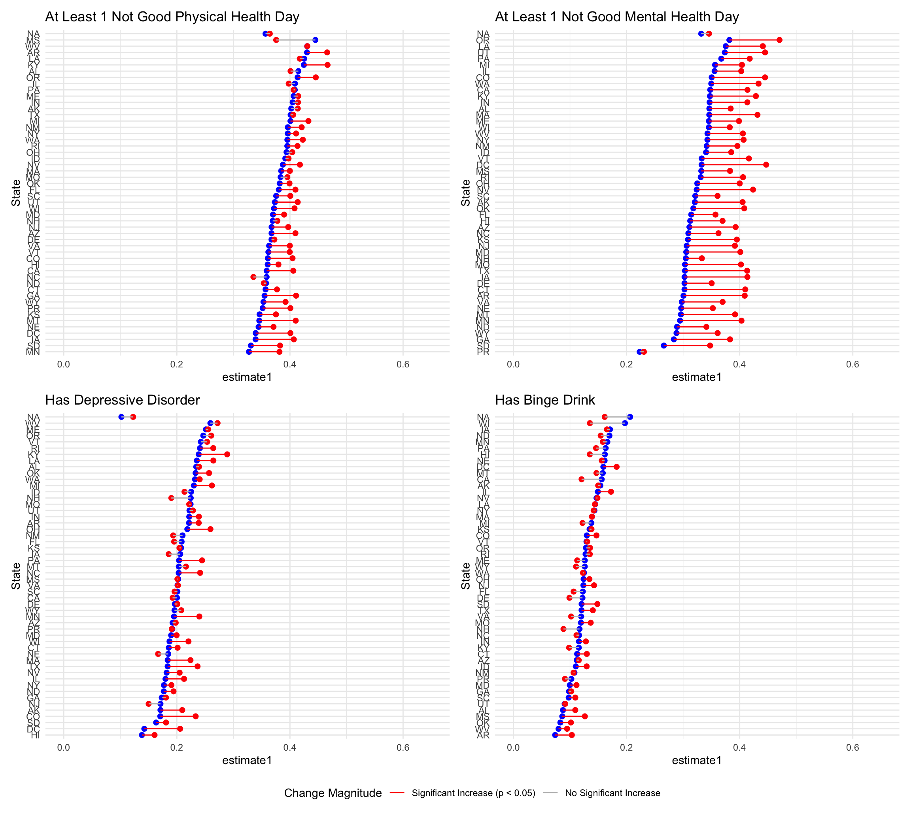
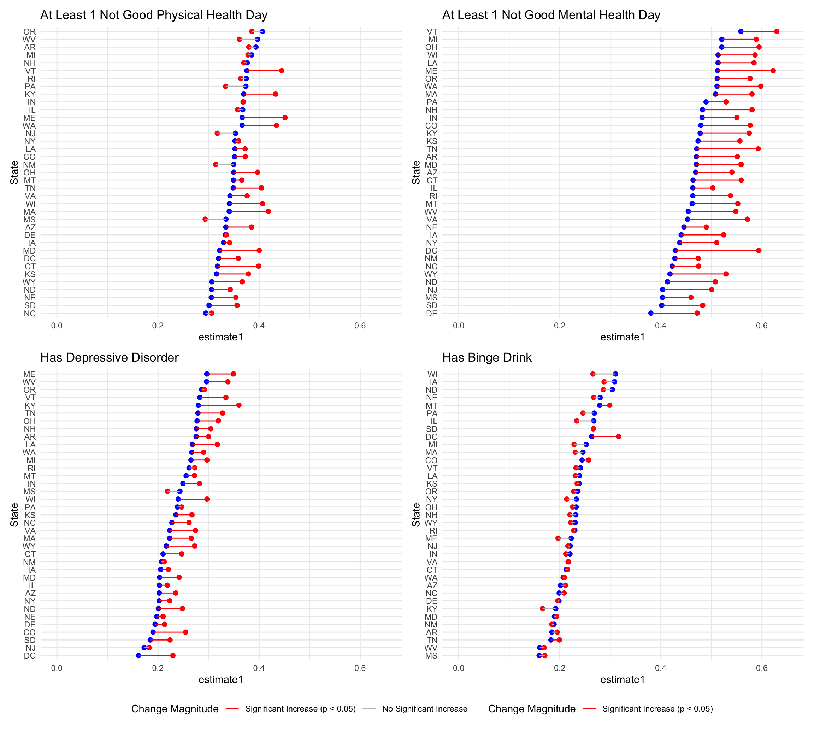
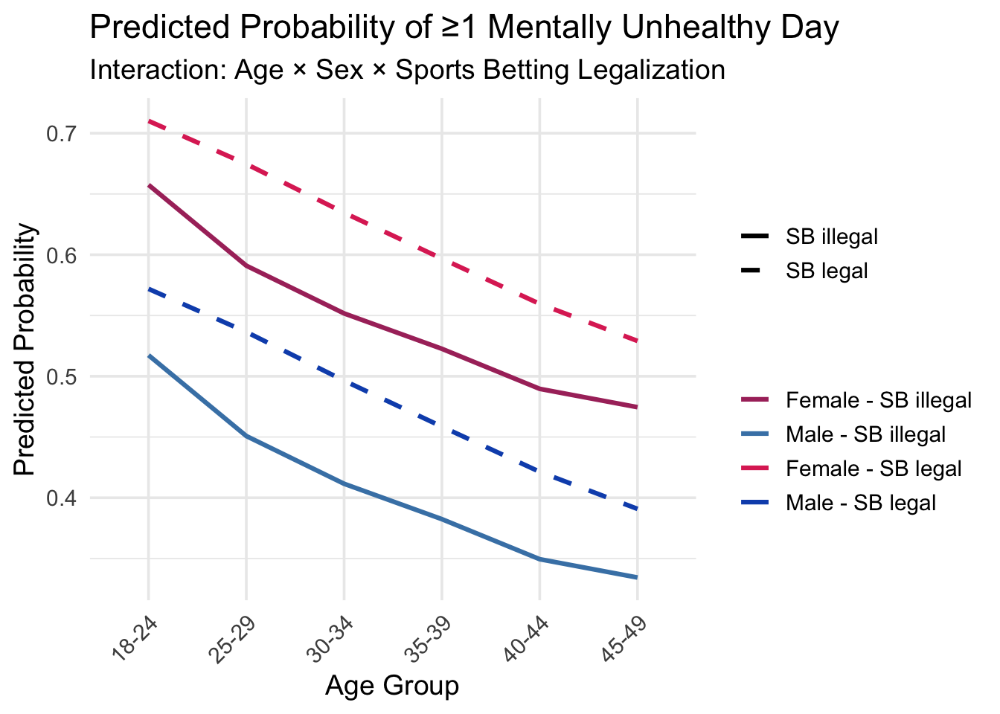

Project Final Report
knitr::opts_chunk$set(echo = TRUE, collapse = TRUE)
library(tidyverse)
library(haven)
library(lubridate)
library(here)
library(patchwork)
library(epitools)
library(ggcorrplot)
library(patchwork)
library(plotly)
source(here("source", "load_clean_brfss.R"))
source(here("source", "filter_brfss_data.R"))
source(here("source", "standardize_brfss_variable.R"))
source(here("source", "prop_test_functions.R"))
source(here("source", "run_fishers_test.R"))
brfss_data = load_clean_brfss(here("data", "brfss_clean_2017_2024.csv.zip"))
state_fips = read_csv(here("data", "legal_sports_report", "state_fips.csv"))
state_legal_dates = read_csv(here("data", "legal_sports_report", 'state_legalization_dates.csv'))
sb_rev_by_month = read_csv(here("data", "legal_sports_report", "sb_rev_by_month.csv"))
sb_rev_by_state_month = read_csv(here("data", "legal_sports_report",'sb_rev_by_state_month.csv'))
sb_rev_by_state = read_csv(here("data", "legal_sports_report", "sb_rev_by_state.csv"))
state_pop = read_csv(here("data", "state_population_census.csv"))
years_in_data = unique(year(pull(sb_rev_by_month, month)))
outcome_vars = c("any_physical_health_not_good_days", "any_mental_health_not_good_days", "has_depressive_disorder", "has_binge_drink")1. Motivation
The rapid expansion of legalized sports gambling in the United States has reshaped the landscape of professional sports. Since the Supreme Court ruled in 2018 to repeal the Professional and Amateur Sports Protection Act (PASPA), 39 states have legalized some form of sports betting, generating billions in annual handle (total amount wagered). It feels like there is a new sports gambling scandal every month, most recently the NBA gambling scandal and an ongoing debate over NCAA rules regarding athlete gambling, involving the increasingly popular player-specific proposition “prop” bets. Despite industry claims that legalization promotes consumer protections and tax revenue, concerns persist that widespread access may lead to an increase in gambling participation and adverse financial and health outcomes.
This project, “The House Always Wins? Exploring the Societal Costs of Legal Sports Gambling,” investigates the public health implications of this policy shift. Building on prior scholarship, we integrate Behavioral Risk Factor Surveillance System (BRFSS) data, state-level gambling policy information, and market activity to examine how legalization relates to self-reported mental health outcomes and population-level risk profiles. By combining behavioral surveillance data with policy variation across states, the project aims to generate empirical evidence on how sports gambling laws trend with population health.
3. Initial questions
Initial Questions:
What are the trends in the amount of money wagered (handle) across states that have legalized sports gambling?
Does legalized sports gambling have a negative effect on public health outcomes? This involves analyzing changes in rates of depression (or other mental disorders), domestic violence, and substance abuse in states where sports betting is legal.
Using the each state’s legalization date (if one exists) as the inflection point, are these health outcomes stratified by demographics (age, sex, race, tax bracket, and education level) and state?
New Questions:
- How are health outcomes associated with each other? Are there patterns between variables that may help inform what to control for in future analyses?
4. Data
Source
Our primary data source for health outcomes is the Behavioral Risk Factor Surveillance System (BRFSS), an annual, state-based, telephone survey conducted by the CDC. We looked at all completed interviews between 2017 and 2024 (that were publicly available as of early November 2025). We chose this period as it spans the period before the Supreme Court ruling in 2018, which allowed many states to legalize sports betting. Our final dataset contained approximately 2.75 million completed interviews across all years.
For information on sports betting we scraped data from Legal Sports Report and manually pulled the dates of legalization (for both retail and online) from the American Gaming Association
Scraping Method
The code to scrape Legal Sports Report is in
get_sports_betting_data.R. The process was straightforward,
with two summary tables at the top and separate tables for each state
below. We pulled all html tables and iterated through the state headers
to aggregate data for all states. There were a few states with no data
(Florida, New Mexico, North Dakota, Washington, and Wisconsin).
Cleaning
Across the years, there have been many iterations of the BRFSS survey, in terms of variable coding and questions asked. As a result, extensive cleaning and standardization was required. This process was handled with several source files.
The initial cleaning takes a while to run, so it is included but not evaluated here:
read_standardize_clean = function(datayear, filepath) {
print(datayear)
cleaned_data =
read_xpt(filepath) |>
janitor::clean_names() |>
standardize_brfss_variable() |>
filter_brfss_data(data_year = datayear)
cleaned_data
}
data_years = 2017:2024
filepaths <- here::here("data", "raw_data", "brfss", paste0("LLCP", data_years, ".XPT"))
data =
tibble(
data_year = data_years,
filepath = filepaths,
cleaned_dfs = map2(data_year, filepath, read_standardize_clean)
) |>
select(cleaned_dfs) |>
unnest(cols = c(cleaned_dfs))
data |> write_csv(here::here("data", "brfss_clean_2017_2024.csv")) # has some duplicate variables, handled in load/clean stepThis chunk takes the downloaded .XPT files available through the CDC website (~9 GB total!), standardizes and filters the individual years, concatenates the data from each year, and saves the final dataset as a csv. This cleaned csv is then zipped and loaded in subsequent operations. A more detailed explanations of this process are available in brfss_data_exploration.Rmd and brfss_data_cleaning.Rmd.
- standardize_brfss_variable.R:
This function renames variables that have more than one version of the
same variable (e.g.
HLTHPL1andHLTHPL2). Seeing that the variables differed in name only (the responses were coded in the same way), this was handled by renaming different versions to the single standardized name. (e.g.hlthpl_standard). - filter_brfss_data.R:
This function keeps the key variables for our study (unique survey
identifiers, demographic/predictor variables, health/financial outcomes
variables). It also filters for completed interviews
(
dispcode = 1100) and converts the date of the interview to a Date type variable. - load_clean_brfss_data.R:
This function is used to load the cleaned data set into R by recoding
variables (e.g.
1 ~ "Male"), and connects the date of each interview to the status of legalization in that state. Thissb_legaltreatment variable is added by merging with state_legalization_dates.csv.
Our analyses focuses on the following cleaned variable groups:
Treatment Variable:
sb_legal(1if the interview was conducted after the state legalized sports betting (rounded to the first of the month),0if it was before, andNAif the state has yet to legalize sport betting)Outcome Variables:
mental_health_not_good_days,physical_health_not_good_days,depressive_disorder, andbinge_drink. In some cases, a binary version of these variables was used (1 if the participant has the outcome, 0 if not):- At least 1 poor mental health day: “Now thinking about your mental health, which includes stress, depression, and problems with emotions, for how many days during the past 30 days was your mental health not good?”
- At least 1 poor physical health day: “Now thinking about your physical health, which includes physical illness and injury, for how many days during the past 30 days was your physical health not good?”
- Depression: “Has a doctor or other health professional ever told you that you had a depressive disorder, including depression, major depression, dysthymia, or minor depression?”
- Binge Drinking: “Considering all alcoholic beverages that you drink, on average, how many times per month do you have 5 (for men) or 4 (for women) or more drinks on one occasion?”
Predictors: any demographic variables (sex, age group, education level, etc.)
The final number of observations used in the BRFSS dataset were 2749477.
5. Exploratory analysis
Sports Betting
Total Handle and Number of States with Legal Sports Betting
get_n_states_legal = function(input_month) {
n_states_legal = nrow(filter(state_legal_dates, first_start <= input_month))
}
sb_rev_by_month = sb_rev_by_month |>
mutate(
n_states_legal = sapply(month, get_n_states_legal)
)
scale_factor = max(pull(sb_rev_by_month,n_states_legal)) / max(pull(sb_rev_by_month,handle))
sb_rev_by_month |>
ggplot(aes(x = month)) +
geom_line(aes(y=handle, color="handle")) +
geom_line(aes(y=n_states_legal / scale_factor, color="legal")) +
scale_y_continuous(
name = "Handle ($)",
sec.axis = sec_axis(~ . * scale_factor, name="States Legal")
) +
#scale_color_(name = NULL) +
scale_color_discrete(name = NULL, labels = c("handle" = "Total Handle", "legal" = "n States Legal")) +
labs(
title = "Total Sports Handle and Number of States with Legal Sports Betting",
x = "Date"
) +
theme_minimal()
The plot shows handle going up with the number of states that have legalized sports betting. It also clearly shows strong cyclical trends in total handle, suggesting that the volume of betting is highly sensitive to the sports calendar.
Understanding Spikes in Sports Betting Handle
In addition to the BRFSS survey, we looked at sports betting data (Total Handle) to understand the cyclic nature of the betting market that could influence mental health outcomes. The purpose is to determine if the spikes in betting activity align with major sports seasons.
NFL Season
nfl_event_dates = tibble(
date = c(
ymd(paste(years_in_data, "09", "01", sep = "-")),
ymd(paste(years_in_data, "01", "01", sep = "-")),
ymd(paste(years_in_data, "02", "01", sep = "-"))
),
type = case_when(
month(date) == 2 ~ "Solid",
TRUE ~ "Dotted"
),
label = case_when(
month(date) == 9 ~ "Start of Season",
month(date) == 1 ~ "End of Season",
month(date) == 2 ~ "Super Bowl"
)
) |>
filter(date >= min(sb_rev_by_month$month), date <= max(sb_rev_by_month$month))
sb_rev_by_month |>
mutate(handle_B = handle / 1e9) |>
ggplot(aes(x = month, y = handle_B)) +
geom_line() +
ylab("Handle (in USD, Billions)") +
geom_vline(
data = nfl_event_dates,
aes(xintercept = date, linetype = type),
color = "#D50A0A",
show.legend = TRUE
) +
scale_linetype_manual(
name = "NFL Season",
values = c("Dotted" = "dotted", "Solid" = "solid"),
labels = c("Dotted" = "NFL Regular Season", "Solid" = "Super Bowl")
) +
theme(legend.position="bottom")
The largest peak in the betting handle clearly coincides with the NFL regular season in September, and a smaller dip aligns with the season’s end around the Super Bowl.
NCAA March Madness
ncaa_event_dates = tibble(
date = c(
ymd(paste(years_in_data, "03", "01", sep = "-"))
),
type = case_when(
month(date) == 3 ~ "Solid"
),
label = case_when(
month(date) == 3 ~ "March Madness"
)
) |>
filter(date >= min(sb_rev_by_month$month), date <= max(sb_rev_by_month$month))
sb_rev_by_month |>
mutate(handle_B = handle / 1e9) |>
ggplot(aes(x = month, y = handle_B)) +
geom_line() +
ylab("Handle (in USD, Billions)") +
geom_vline(
data = ncaa_event_dates,
aes(xintercept = date, linetype = type),
color = "#009CDE",
show.legend = TRUE
) +
scale_linetype_manual(
name = "NCAA Events",
values = c("Solid" = "solid"),
labels = c("Solid" = "March Madness")
) +
theme(legend.position="bottom")
A secondary peak in betting handle occurs during March Madness. This is important because it represents a period of intense, short-term betting interest.
Cumulative Handle by State
This code uses plotly, which doesn’t render to github document. There is a static image with no interactivity:
sb_rev_by_state = sb_rev_by_state |>
filter(market != "Total") |>
left_join(state_fips, join_by(market == state)) |>
left_join(
select(state_legal_dates, state, first_start, online, offline),
join_by(market == state)) |>
mutate(
legal_type = case_when(
!is.na(online) & !is.na(offline) ~ "both",
!is.na(offline) ~ "offline",
!is.na(online) ~"online"
)
) |>
mutate(
hover = paste("<b>",market,"</b>", '<br>',
"Handle: $", format(handle / 1000000000, digits = 2), "B", "<br>",
"Revenue: $", format(revenue / 100000000, digits = 2), "M", "<br>",
"Hold: ", hold, '%<br>',
"Taxes: ", format(taxes / 100000000, digits = 2), "M",
"<extra></extra>")
)
# give state boundaries a white border
l = list(color = toRGB("white"), width = 2)
# specify some map projection/options
g = list(
scope = 'usa',
projection = list(type = 'albers usa'),
showlakes = TRUE,
lakecolor = toRGB('white')
)
fig = plot_geo(sb_rev_by_state, locationmode = 'USA-states')
fig = fig |>
add_trace(
z = ~handle, hovertemplate = ~hover, #text = ~hover,
locations = ~abbr,
color = ~handle, colorscale="Viridis"
) |>
colorbar(title = "Millions USD") |>
layout(
title = 'Cumulative Handle by State', #<br>(Hover for breakdown)',
geo = g
)
fig
Handle by State in 2024
sb_rev_by_state_month |>
mutate(year = year(month)) |> # Extract year
group_by(state, year) |> # Group by year
summarize(
total_handle = sum(handle, na.rm = TRUE),
) |>
filter(year == 2024) |>
ungroup() |>
mutate(
state = fct_reorder(state, total_handle)
) |>
ggplot(aes(x=state, y= total_handle)) +
coord_flip() +
geom_bar(stat="identity") +
labs(
title = "Sports Betting Handle by State in 2024",
x = "State",
y = "Handle ($)"
) +
theme_minimal()
## `summarise()` has grouped output by 'state'. You can override using the
## `.groups` argument.
We can see New York has the highest handle which makes sense since it is the most populous state. We can get a sense of the popularity of sports gambling by looking at total handle per capita using US census data for total population by state.
Handle by State per Capita in 2024
sb_rev_by_state_month |>
mutate(year = year(month)) |>
group_by(state, year) |>
summarize(
total_handle = sum(handle, na.rm = TRUE),
) |>
filter(year == 2024) |>
ungroup() |>
left_join(select(state_pop, state, "2024"), by = "state") |>
rename(population_2024 = '2024') |>
mutate(
handle_per_capita = total_handle / population_2024,
state = fct_reorder(state, handle_per_capita)
) |>
ggplot(aes(x=state, y= handle_per_capita)) +
coord_flip() +
geom_bar(stat="identity") +
labs(
title = "Sports Betting Handle per Capita in 2024",
x = "State",
y = "Handle ($) per capita"
) +
theme_minimal()
## `summarise()` has grouped output by 'state'. You can override using the
## `.groups` argument.
We can see that Nevada and New Jersey have the highest handle per capita.
BRFSS
Data Completeness
One of our primary concerns with data was ensuring that the key outcome variables were reported consistently from 2017 to 2024.
all_outcome_vars = c("general_health", "general_health_refactored", "michd",
"physical_health", "physical_health_not_good_days", "leisure_physical_activity_last_30_days",
"mental_health", "mental_health_not_good_days", "poor_health", "depressive_disorder",
"difficulty_self_care", "life_satisfaction", "emotional_support", "loneliness", "binge_drink",
"heavy_drink", "lost_reduced_employment", "financial_strain_bills", "financial_strain_utilities")
summarize_outcome_by_year = function(outcome_var, df = brfss_data) {
outcome_sym = rlang::sym(outcome_var)
df |>
group_by(year(date), !!outcome_sym) |>
summarize(n = n(), .groups = "drop") |>
pivot_wider(
names_from = `year(date)`,
values_from = n
)
}
find_complete_years = function(outcome_var, summary_df){
outcome_sym = rlang::sym(outcome_var)
summary_df |>
filter(!is.na(!!outcome_sym)) |>
summarize(
across(
.cols = everything(),
.fns = ~ !all(is.na(.x))
)
)|>
select(-!!outcome_sym) |>
pivot_longer(
cols = everything(),
names_to = "year",
values_to = "is_complete"
) |>
summarize(
n_complete_years = sum(is_complete)
) |>
pull(n_complete_years)
}
complete_outcomes = tibble(
outcome = all_outcome_vars,
summary = map(all_outcome_vars, summarize_outcome_by_year),
n_complete_years = map2(all_outcome_vars, summary, find_complete_years)
) |>
arrange(n_complete_years) |>
filter(
n_complete_years == 8
) |>
pull(outcome)
setdiff(all_outcome_vars, complete_outcomes)
## [1] "life_satisfaction" "emotional_support"
## [3] "loneliness" "lost_reduced_employment"
## [5] "financial_strain_bills" "financial_strain_utilities"Some of the outcome variables we were interested in looking at like financial strain, were not available in all years. In order to maintain a robust analysis over time, we were limited to those variables that were available over all years. Our 4 primary outcomes are available over all years.
Distribution of Key Outcomes + Rationale for Binary Outcomes
brfss_data |>
filter(year(date) %in% c(2017, 2024)) |>
select(year = date, mental_health, physical_health) |>
mutate(
year = factor(year(year)),
mental_health = ifelse(mental_health > 30, 31, mental_health),
physical_health = ifelse(physical_health > 30, 31, physical_health)
) |>
pivot_longer(
cols = c(mental_health, physical_health),
names_to = "outcome",
values_to = "n_bad_days"
) |>
ggplot(aes(x = n_bad_days, fill = year)) +
geom_bar(position = "dodge") +
scale_x_continuous(breaks = c(0, 7, 14, 21, 31), labels = c(0, 7, 14, 21, 31)) +
facet_wrap(~outcome) +
labs(
title = "Distribution of Poor Health Days (2017 vs. 2024)",
x = "Number of Days of Poor Health (Past 30 Days)",
y = "Count of Respondents"
)
## Warning: Removed 27288 rows containing non-finite outside the scale range
## (`stat_count()`).
Given the concentration of responses at 0 days, we decided to use a
binary outcome variable like
any_physical_health_not_good_days as the outcome variable.
This also follows what Couture, et. al. used in their analysis. It also
simplified statistical tests that we decided to do later on.
Correlation Analysis
To understand relationships among the health outcome variables in the BRFSS dataset, we conducted a correlation analysis. Initially, we computed separate correlation matrices for males and females to assess whether the relationships among health outcomes differed meaningfully by sex. For each group, we selected potential key health variables:
#selecting variables
correlation_vars = c("general_health","general_health_refactored",
"mental_health", "mental_health_not_good_days",
"physical_health", "physical_health_not_good_days",
"poor_health", "depressive_disorder",
"difficulty_self_care", "michd",
"binge_drink", "heavy_drink",
"leisure_physical_activity_last_30_days")
#stratifying datasets by sex
brfss_males = brfss_data |>
filter(sex == "Male") |>
select(all_of(correlation_vars)) |>
mutate_all(as.numeric)
brfss_females = brfss_data |>
filter(sex == "Female") |>
select(all_of(correlation_vars)) |>
mutate_all(as.numeric)corr_males =
cor(brfss_males,
method = "spearman",
use = "pairwise.complete.obs") |>
ggcorrplot(
type = "upper",
method = "square",
lab = TRUE,
lab_size = 2.5,
tl.cex = 10,
title = "Correlations: males") +
theme(plot.title = element_text(hjust = 0.5))
corr_females =
cor(brfss_females,
method = "spearman",
use = "pairwise.complete.obs") |>
ggcorrplot(
type = "upper",
method = "square",
lab = TRUE,
lab_size = 2.5,
tl.cex = 10,
title = "Correlations: females") +
theme(plot.title = element_text(hjust = 0.5))
corr_males
corr_females
Overall, the patterns of association between variables were highly similar across sexes with no meaningfully different direction or magnitude of correlations. Because stratification did not reveal significant differences, we proceeded to perform correlation analysis without stratification.
brfss_all = brfss_data |>
select(all_of(correlation_vars)) |>
mutate_all(as.numeric)
cor(brfss_all,
method = "spearman",
use = "pairwise.complete.obs") |>
ggcorrplot(
type = "upper",
method = "square",
lab = TRUE,
lab_size = 2.5,
tl.cex = 10,
title = "Correlations"
) +
theme(plot.title = element_text(hjust = 0.5))
The correlation matrix revealed redundancy with pairs of variables,
e.g., mental_health
vs. mental_health_not_good_days (r = 0.99). Including both
variables in regression models would introduce multicollinearity, so one
variable from each pair was selected.
We can see that depressive_disorder showed the strongest
positive correlation with mental_health(r = 0.44).
poor_health showed a similar pattern correlating the
strongest with physical_health (r = 0.43). These trends may
reflect how individuals reporting depressive symptoms or more days where
poor health negatively impacted usual activities also tend to report
more poor physical and mental health days.
On the other hand, heavy_drink and
binge_drink showed weak correlations with most other health
outcomes.
Note: BRFSS contains a variable general_health which is
a Likert scale from 1-6 with 1 being “Good Health” and 6 being “Poor
Health.” There is also a general_health_refactored column
with 1 being “Good Health” and 2 being “Poor Health.”
general_health_refactored shows negative correlations with
variables like physical_health and
mental_health. As general health gets better (lower score),
the number of bad health days goes up. This is an unexpected result. We
can see that general_health has little correlation between
most other health outcomes, which was surprising. We may be seeing these
trends since general_health_refactored has fewer, more
broadly defined categories. The more narrowly defined
general_health shows minimal correlation. If we were to do
future analyses, we would want to use the narrowly defined variable
general_health.
Distribution of Primary Health Outcomes by Demographic Variables
We explored how our primary health outcomes were distributed across
demographic and socioeconomic groups. We used
mental_health_not_good_days,
physical_health_not_good_days,
depressive_disorder, and binge_drink based on
the consistent availability of these health outcomes across 2017-2024.
Before plotting, we ordered the factor levels of some demographic
variables to ensure categories appeared in a meaningful sequence in the
visualizations.
We used stacked bar plots to visualize these distributions with each bar representing a demographic category, and the bar divided into segments to show the proportion of individuals falling into each health outcome. We used proportions instead of raw counts since the demographic groups differ in size within the BRFSS dataset.
To efficiently visualize the distribution of these health outcome across any demographic variable, we constructed a set of plotting functions for each outcome.
#Bad mental health days outcome
plot_mental_health = function(demo_var, plot_title) {
brfss_data |>
filter(
!is.na(.data[[demo_var]]),
!is.na(mental_health_not_good_days)
) |>
ggplot(aes(x = .data[[demo_var]], fill = mental_health_not_good_days)) +
geom_bar(position = "fill") +
scale_fill_manual(
values = c(
"0" = "darkolivegreen2",
"1-13" = "yellow2",
"14+" = "brown2"
),
name = "# of Bad Mental Health Days"
) +
labs(
x = demo_var,
y = "Proportion",
title = plot_title
) +
theme_minimal() +
theme(axis.text.x = element_text(angle = 45, hjust = 1))
}
#Bad physical health days outcome
plot_physical_health = function(brfss_data, demo_var, plot_title) {
brfss_data |>
drop_na(physical_health_not_good_days) |>
drop_na(.data[[demo_var]]) |>
ggplot(aes(x = .data[[demo_var]], fill = physical_health_not_good_days)) +
geom_bar(position = "fill") +
scale_fill_manual(
values = c(
"0" = "darkolivegreen2",
"1-13" = "yellow2",
"14+" = "brown2"
),
name = "# of Bad Physical Health Days"
) +
labs(
x = demo_var,
y = "Proportion",
title = plot_title
) +
theme_minimal() +
theme(axis.text.x = element_text(angle = 45, hjust = 1))
}
#Depressive disorder outcome
plot_depression = function(demo_var, plot_title) {
brfss_data |>
mutate(
income_level = factor(
income_level,
levels = c(
"Less than $10,000",
"$10,000 to < $15,000",
"$15,000 to < $20,000",
"$20,000 to < $25,000",
"$25,000 to < $35,000",
"$35,000 to < $50,000",
"$50,000 to < $75,000",
"$75,000 or more")
)
) |>
drop_na(depressive_disorder) |>
drop_na(.data[[demo_var]]) |>
ggplot(aes(x = .data[[demo_var]], fill = depressive_disorder)) +
geom_bar(position = "fill") +
scale_fill_manual(
values = c(
"No" = "steelblue2",
"Yes" = "red4"
),
name = "Depressive Disorder"
) +
labs(
x = demo_var,
y = "Proportion",
title = plot_title
) +
theme_minimal() +
theme(axis.text.x = element_text(angle = 45, hjust = 1))
}
#Binge drinker outcome
plot_bingedrink = function(demo_var, plot_title) {
brfss_data |>
drop_na(binge_drink) |>
drop_na(.data[[demo_var]]) |>
ggplot(aes(x = .data[[demo_var]], fill = binge_drink)) +
geom_bar(position = "fill") +
scale_fill_manual(
values = c(
"No" = "steelblue2",
"Yes" = "red4"
),
name = "Binge Drinker"
) +
labs(
x = demo_var,
y = "Proportion",
title = plot_title
) +
theme_minimal() +
theme(axis.text.x = element_text(angle = 45, hjust = 1))
}Looking at the distribution of bad mental health days by age group:
plot_mental_health(
demo_var = "age_group_5yr",
plot_title = "Distribution of Bad Mental Health Days by Age Group"
)
The 18-24 and 25-29 age groups have the largest proportion of individuals reporting 1-13 and 14+ bad mental health days. Younger adults report the highest frequency of bad mental health days, while older adults report the lowest.
Looking at the distribution of bad physical health days by sex:
plot_physical_health(
brfss_data,
demo_var = "sex",
plot_title = "Distribution of Bad Physical Health Days by Sex"
)
## Warning: Use of .data in tidyselect expressions was deprecated in tidyselect 1.2.0.
## ℹ Please use `all_of(var)` (or `any_of(var)`) instead of `.data[[var]]`
## This warning is displayed once every 8 hours.
## Call `lifecycle::last_lifecycle_warnings()` to see where this warning was generated.
We can see that overall distributions are very similar across males and females. The proportion reporting 14+ days is relatively small and nearly identical between sexes. The similarity in patterns can show that sex differences are unlikely to significantly confound associations unless interacting with age or other factors.
Distribution of Depressive order by Income Level:
plot_depression(
demo_var = "income_level",
plot_title = "Distribution of Depressive Order by Income Level"
)
The lowest-income groups (less than $10,000 and $10,000 to <$15,000) have the highest proportions of individuals reporting a depressive disorder. As income decreases, the proportion of respondents with depressive disorder increases.
Distribution of Binge drinking by Age Group:
plot_bingedrink(
demo_var = "age_group_5yr",
plot_title = "Distribution of Binge Drinking by Age Group"
)
We can see that binge drinking is most common among younger adults with the peak in the 25-29 age group. It steadily declines as age increases.
6. Additional analysis
If you undertake formal statistical analyses, describe these in detail
To test the relationship between sports betting legalization and health outcomes, we employed two statistical approaches: a proportion test to compare the prevalence of adverse outcomes before and after the legalization of sports betting, and a Fisher’s Exact Test to calculate the Relative Risk (RR) of these outcomes in states where sports betting is legal vs. states where it is illegal for the most recent data in 2024. We compared outcome rates in “exposed” (sports betting is legal) and “unexposed” (sports betting is not legal) populations.
Prop Tests
Our one-sided two sample proportion tests are examining whether there is a significant change (baseline is lower) in the rates of the 4 health outcomes. In the first test, for example, the null hypothesis is that the rate of a particular outcome (e.g. binge drinking) is the same in 2017 and in 2024. The alternative is that the rate of binge drinking was less in 2017 that it was in 2024.
These tests looks at the raw change over time, regardless of when legalization occurred, providing a general benchmark. The lines show the change, and the color indicates statistical significance.
prop_tests_state =
brfss_data |>
filter(year(date) %in% c(2017, 2024)) |>
select(state, date, all_of(outcome_vars)) |>
pivot_longer(
cols = all_of(outcome_vars),
names_to = "outcome",
values_to = "outcome_value"
) |>
group_by(state, outcome) |>
nest() |>
mutate(test_result = map(data, run_prop_test_state)) |>
factor_significant()
combine_plots(prop_tests_state)
The second test we wanted to run used each state’s specific
legalization date, sb_legal, as the inflection point. We
also repeated this test looking specifically at adults under 50 due to
their higher participation in sports betting.
According to PEW research, “Young adults are more likely than older Americans to say they’ve placed a sports bet in the past year.”
prop_tests_sb_legal =
brfss_data |>
select(state, sb_legal, all_of(outcome_vars)) |>
pivot_longer(
cols = all_of(outcome_vars),
names_to = "outcome",
values_to = "outcome_value"
) |>
group_by(state, outcome) |>
nest() |>
mutate(test_result = map(data, run_prop_test_state_legalization)) |>
factor_significant()
combine_plots(prop_tests_sb_legal)
prop_tests_sb_legal =
brfss_data |>
filter(age_group_5yr %in% c("18-24", "25-29", "30-34", "35-39", "40-44", "45-49")) |>
select(state, sb_legal, all_of(outcome_vars)) |>
pivot_longer(
cols = all_of(outcome_vars),
names_to = "outcome",
values_to = "outcome_value"
) |>
group_by(state, outcome) |>
nest() |>
mutate(test_result = map(data, run_prop_test_state_legalization)) |>
factor_significant()
combine_plots(prop_tests_sb_legal)
Relative Risk of Poor Mental Health Outcomes in Legal vs. Non-Legal states in 2024
In 2024, what is the risk of having poor mental health outcomes based on state legalization?
Exposure: betting legalization
Outcomes: any_physical_health_not_good_days, any_mental_health_not_good_days, has_depressive_disorder, has_binge_drink
We opted to use a Fisher’s exact test in the event that one of the counts happened to be small. The goal of this test is to determine if there is a statistically significant association between status of sports betting legalization and the presence of the 4 health outcomes.
phys_health_results =
brfss_data |>
filter(year(date) == 2024, age_group_5yr %in% c("18-24", "25-29"), !is.na(any_physical_health_not_good_days)) |>
select(sb_legal, any_physical_health_not_good_days) |>
rename(outcome = any_physical_health_not_good_days) |>
run_fishers_test()
phys_health_results |> pull(summary) |> knitr::kable()
|
ment_health_results =
brfss_data |>
filter(year(date) == 2024, age_group_5yr %in% c("18-24", "25-29"), !is.na(any_mental_health_not_good_days)) |>
select(sb_legal, any_mental_health_not_good_days) |>
rename(outcome = any_mental_health_not_good_days) |>
run_fishers_test()
ment_health_results |> pull(summary) |> knitr::kable()
|
depression_results =
brfss_data |>
filter(year(date) == 2024, age_group_5yr %in% c("18-24", "25-29"), !is.na(has_depressive_disorder)) |>
select(sb_legal, has_depressive_disorder) |>
rename(outcome = has_depressive_disorder) |>
run_fishers_test()
depression_results |> pull(summary) |> knitr::kable()
|
binge_drink_results =
brfss_data |>
filter(year(date) == 2024, age_group_5yr %in% c("18-24", "25-29"), !is.na(has_binge_drink)) |>
select(sb_legal, has_binge_drink) |>
rename(outcome = has_binge_drink) |>
run_fishers_test()
binge_drink_results |> pull(summary) |> knitr::kable()
|
Linear Regression on any bad mental health days
brfss_data = load_clean_brfss(here::here("data", "brfss_clean_2017_2024.csv.zip")) |>
mutate(
month = lubridate::floor_date(date, unit = "month")
)
## Rows: 37 Columns: 6
## ── Column specification ────────────────────────────────────────────────────────────────────
## Delimiter: ","
## chr (2): state, abbr
## dbl (1): fips
## date (3): first_start, online, offline
##
## ℹ Use `spec()` to retrieve the full column specification for this data.
## ℹ Specify the column types or set `show_col_types = FALSE` to quiet this message.
## Multiple files in zip: reading 'brfss_clean_2017_2024.csv'
## Rows: 2749477 Columns: 39
## ── Column specification ────────────────────────────────────────────────────────────────────
## Delimiter: ","
## chr (2): imonth, iday
## dbl (36): qstver, dispcode, state, seqno, iyear, sex, marital, educag, empl...
## date (1): date
##
## ℹ Use `spec()` to retrieve the full column specification for this data.
## ℹ Specify the column types or set `show_col_types = FALSE` to quiet this message.Filter age group < 50 (and sports betting legal)
brfss_age_data = brfss_data |>
filter(
age_group_5yr %in%
c("18-24","25-29","30-34","35-39","40-44","45-49"),
sb_legal %in% c(0, 1))We used a linear regression model to look at the effect of legalized sports betting on any bad mental health days, and the interaction between sex and age.
fit = lm(any_mental_health_not_good_days ~ sex + age_group_5yr + sb_legal
+ sex * sb_legal
+ age_group_5yr * sb_legal, data = brfss_age_data)
fit_result = fit |>
broom::tidy() |>
select(term, estimate, std.error, p.value)
fit_result |>
knitr::kable(digits = 3)| term | estimate | std.error | p.value |
|---|---|---|---|
| (Intercept) | 0.658 | 0.002 | 0.000 |
| sexMale | -0.140 | 0.002 | 0.000 |
| age_group_5yr25-29 | -0.067 | 0.003 | 0.000 |
| age_group_5yr30-34 | -0.106 | 0.003 | 0.000 |
| age_group_5yr35-39 | -0.135 | 0.003 | 0.000 |
| age_group_5yr40-44 | -0.168 | 0.003 | 0.000 |
| age_group_5yr45-49 | -0.183 | 0.003 | 0.000 |
| sb_legal | 0.053 | 0.003 | 0.000 |
| sexMale:sb_legal | 0.002 | 0.002 | 0.425 |
| age_group_5yr25-29:sb_legal | 0.031 | 0.005 | 0.000 |
| age_group_5yr30-34:sb_legal | 0.030 | 0.004 | 0.000 |
| age_group_5yr35-39:sb_legal | 0.022 | 0.004 | 0.000 |
| age_group_5yr40-44:sb_legal | 0.017 | 0.004 | 0.000 |
| age_group_5yr45-49:sb_legal | 0.002 | 0.004 | 0.651 |
Predicted Probability of ≥1 Mentally Unhealthy Day
# Build prediction grid
pred_df = expand.grid(
sex = c("Female", "Male"),
age_group_5yr = c("18-24","25-29","30-34","35-39","40-44","45-49"),
sb_legal = c(0, 1) # illegal = 0, legal = 1
)
# Get predicted probabilities and plot
pred_df |>
mutate(pred_prob = predict(fit, newdata = pred_df)) |>
ggplot(aes(x = age_group_5yr, y = pred_prob,
color = interaction(sex, sb_legal),
group = interaction(sex, sb_legal),
linetype = factor(sb_legal))) +
geom_line(size = 1.1) +
scale_color_manual(
name = "",
values = c(
"Female.0" = "#AA336A", # orange solid
"Female.1" = "#DE3163", # blue dashed
"Male.0" = "#4682B4", # green solid
"Male.1" = "#0F52BA" # blue dashed
),
labels = c(
"Female.0" = "Female - SB illegal",
"Female.1" = "Female - SB legal",
"Male.0" = "Male - SB illegal",
"Male.1" = "Male - SB legal"
)
) +
scale_linetype_manual(
name = "",
values = c("0" = "solid", "1" = "dashed"),
labels = c("0" = "SB illegal", "1" = "SB legal")
) +
labs(
x = "Age Group",
y = "Predicted Probability",
title = "Predicted Probability of ≥1 Mentally Unhealthy Day",
subtitle = "Interaction: Age × Sex × Sports Betting Legalization"
) +
theme_minimal(base_size = 14) +
theme(
legend.position = "right",
axis.text.x = element_text(angle = 45, hjust = 1)
)
7. Discussion
Overall, we found a significant relationship between legalization of sports betting and poor physical/mental health. It is important to note that in our statistical analyses, even if the effect size was small, we still had a small p-value. This is likely due to the size of the BRFSS dataset (~2.7 million observations).
Our tests of proportion, which first examined the overall trend in the four health outcomes between 2017 and 2024, established two trends at the national scale. First, there is a clear increase in the rate of survey participants reporting at least one poor physical or mental health day in almost all states. This is an important benchmark for effects we observed later on. However, rates of depressive disorders showed a slight increase and rates in binge drinking remained the same across this period.
To isolate the impact of the change in sport betting legalization, we performed additional tests of proportion using each state’s date of legalization as the inflection point. These results largely mirrored the overall trends observed nationally between 2017 and 2024. This implies that the impact of sports betting legalization in a particular state did not deviate from the broader trend observed over time. One important note is that this period includes the COVID-19 pandemic, which likely had effects on health outcomes in the US and overlaps with the dates that several states legalized sports betting.
Knowing that more young adults participate in sports betting, we further filtered the data for participants under 50 years old. In this subset, the overall rate of mental health and depressive disorders was higher than the general population. This makes sense intuitively. However, the change in the rate after legalization was similar to the overall change.
When put together, these tests of proportion suggest that health outcomes have worsened since 2017 across the US overall. These results do not show that sports betting legalization changes these trends beyond what is observed temporally at the national level.
However, this conclusion is modified when we look at the relative risk of adverse health outcomes in 2024:
Among BRFSS participants in 2024 between the ages of 18 and 29, those who resided in states with legalized sports betting had:
- 1.06x risk of having at least 1 day of poor physical health
- 1.05x risk of having at least 1 day of poor mental health
- 1.07x risk of having depression
- 1.15x risk of binge drinking
compared to those residing in states where sports betting is not legal. Each of these results also show that there is a statistically significant relationship between the status of sports betting legalization and health outcomes:
- At least 1 day of poor physical health: p = 5.08e-05
- At least 1 day of poor mental health: p = 1.61e-08
- Depression: p = 5.17e-04
- Binge Drinking: p = 1.75e-10
The regression model showed baseline differences in mental health between sexes and age groups as well as the effects of legalized sports gambling. Men have a 14.02 percentage point lower probability of reporting ≥1 mentally unhealthy day compared to women (p < 0.001). All age coefficients are negative, meaning older groups report fewer mentally unhealthy days than 18–24-year-olds, This matches known demographic patterns typical in BRFSS mental health data.
The overall effect of sports betting legality (sb_legal)
was 0.053 p = 8.06e-55. In the reference group (female, age 18–24),
living in a state where sports betting is legal is associated with a
5.262 percentage point higher probability of reporting ≥1 mentally
unhealthy day in the past month.
There is no meaningful difference in the effect of sports betting legalization between men and women. The coefficient is tiny (0.0019712) and not statistically significant (p = 0.425.)
Each age interaction term tells us how much the effect of sports betting legality differs from the reference group (18–24).
fit_result |>
filter(str_starts(term, "age_group_") & str_ends(term, "sb_legal")) |>
select(term, estimate, p.value) |>
mutate(
term = str_replace_all(term, c("age_group_5yr"="", ":sb_legal"=""))
) |>
rename("Age Group" = term) |>
knitr::kable(digits=3)| Age Group | estimate | p.value |
|---|---|---|
| 25-29 | 0.031 | 0.000 |
| 30-34 | 0.030 | 0.000 |
| 35-39 | 0.022 | 0.000 |
| 40-44 | 0.017 | 0.000 |
| 45-49 | 0.002 | 0.651 |
The effect is largest for adults 25-29 (0.0310474) and not significant for adults 45-49. The impact of sports betting legalization on mentally unhealthy days appears stronger for younger adults (25–44) but then plateaus. This result can also be seen in the predicted probabilty of having 1 or more bad mental health days.
The results showed how the predicted probability of reporting at least one mentally unhealthy day in the past month varies across age groups, sex, and whether sports betting is legal in the respondent’s state. When sports betting is not legal, women consistently report higher rates of mentally unhealthy days than men across all age groups. Both sexes show a steady decline in mentally unhealthy days as age increases, with 18–24-year-olds exhibiting the highest risk and 45–50-year-olds the lowest.
The effect of sports betting legalization is shown by the separation between the dashed lines (SB legal) and the solid lines. Across all age groups, the dashed lines lie above the corresponding solid lines, which means sports betting legalization is associated with a higher probability of reporting mentally unhealthy days. It also shows the size of this increase varies by age and the difference is largest among young and early-mid adults, especially ages 25–44.
The vertical distance between male and female lines remains fairly constant regardless of legalization status, which indicates women consistently report more mentally unhealthy days than men. The effect of sports betting legalization is similar for both sexes (this supports the non-significant sex × legalization interaction in the regression model).
The graph visually confirms the pattern in the coefficients: among younger adults (25–44), the increase associated with sports betting legalization is noticeably larger and this decreases with age. This suggests that younger and mid-age adults may be more sensitive to environmental or policy changes related to gambling or these age groups may participate more in gambling or be more exposed to advertising or technology that connects them to sports betting markets.
Sports betting legalization is associated with a higher probability of experiencing mentally unhealthy days, especially among adults aged 25–44, and this pattern is similar for both men and women. The effect does not appear uniform across age groups, indicating a meaningful interaction between age and policy.
Overall Conclusions
After adjusting for sex and age, living in a state with legal sports betting is associated with higher probability of having mentally unhealthy days, especially among adults aged 25–44. The effect size is around 5–8 percentage points, depending on age group. Men and women are affected similarly, which doesn’t align with the Couture et al. findings, likely because we were looking at a larger dataset which included post-COVID-19 observations. Younger adults (18–24) have the highest baseline mental health risk, but legalization effects are somewhat stronger for those 25–44. These associations cannot establish causality (due to cross-sectional BRFSS data), but they indicate a robust correlation.
Limitations
We are not following the same participants over time which prevents establishing causal relationships. We cannot determine whether the legalization of sports betting directly contributed to worsening health outcomes. Also, the measure of health outcomes are self-reported which may introduce recall bias and response bias. Respondents may inaccurately recall their health over the past 30 days and under-report sensitive behaviors due to stigma.
The study period includes the COVID-19 pandemic which potentially
serves as a major confounding event. Changes in health outcomes related
to the pandemic may coincide with legalization, confounding
associations. Our exposure variable, sb_legal does not
account for individual sports betting behavior or the level/intensity of
exposure, therefore, which only allowed us to address population-level
associations based on legalization exposure.
Additional Analyses
There are many additional analyses that could be done on the dataset, given more time. This includes finely tuning the regression model and addressing confounding factors, like COVID. We observed that mental health outcomes decreased overall from 2017-2024, but establishing a causal effect of sports betting would require further analysis. We did not get a chance to look at the effect of online vs. retail-only sports betting legalization (which varies state-to-state), but this would be another interesting policy effect to examine.